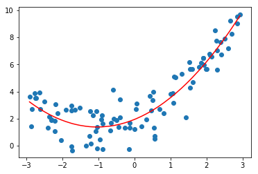
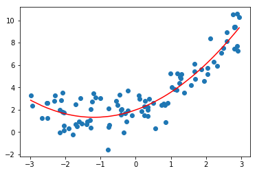

2.scikit-learn中的多项式回归于pipeline
1.使用scikit-learn中的多项式对数据进行预处理
# sklearn中对数据进行预处理的函数都封装在preprocessing模块下，包括之前学的归一化StandardScaler
from sklearn.preprocessing import PolynomialFeatures
poly = PolynomialFeatures()
poly.fit(X)
X2 = poly.transform(X)
# 第一列是sklearn为我们添加的X的零次方的特征
# 第二列和原来的特征一样是X的一次方的特征
# 第三列是添加的X的二次方的特征
X2[:5]
array([[ 1. , 2.5980174 , 6.74969443],
[ 1. , 2.07484052, 4.30496317],
[ 1. , -1.74999096, 3.06246837],
[ 1. , -2.74141103, 7.51533441],
[ 1. , -1.3420996 , 1.80123135]])
2.调用LinearRegression对X2进行预测
lin_reg2 = LinearRegression()
lin_reg2.fit(X2,y)
y_predict2 = lin_reg2.predict(X2)
plt.scatter(x,y)
# 由于x是乱的，所以应该进行排序
plt.plot(np.sort(x),y_predict2[np.argsort(x)],color='r')
[<matplotlib.lines.Line2D at 0x1a1c4e8860>]

lin_reg2.coef_
array([0. , 1.08043759, 0.52423752])
3.关于PolynomialFeatures
# 测试多维的数据集
X = np.arange(1,11).reshape(5,2)
X.shape
(5, 2)
X
array([[ 1, 2],
[ 3, 4],
[ 5, 6],
[ 7, 8],
[ 9, 10]])
poly = PolynomialFeatures(degree=2)
poly.fit(X)
X2 = poly.transform(X)
X2
array([[ 1., 1., 2., 1., 2., 4.],
[ 1., 3., 4., 9., 12., 16.],
[ 1., 5., 6., 25., 30., 36.],
[ 1., 7., 8., 49., 56., 64.],
[ 1., 9., 10., 81., 90., 100.]])
将52的矩阵进行多项式转换后变成了56
- 第一列是1 对应的是0次幂
- 第二列和第三列对应的是原来的x矩阵，此时他有两列一次幂的项
- 第四列是原来数据的第一列平方的结果
- 第六列是原来数据的第二列平方的结果
- 第五列是原来数据的两列相乘的结果
可以想象如果将degree设置为3，那么将产生一下10个元素
1,X1,X2
X21,X22,X1*X2
X13,X23,X12X2,X22X1
也就是说PolynomialFeatures会穷举出所有的多项式组合
3.Pipline
pipline的英文名字是管道，那么 我们如何使用管道呢，先考虑我们多项式回归的过程
1.使用```PolynomialFeatures```生成多项式特征的数据集
2.如果生成数据幂特别的大，那么特征直接的差距就会很大，导致我们的搜索非常慢，这时候可以进行**数据归一化**
3.进行线性回归
pipline 的作用就是把上面的三个步骤合并，使得我们不用一直重复这三步
x = np.random.uniform(-3,3,size=100)
X = x.reshape(-1,1)
# 一元二次方程
y = 0.5*x**2 + x + 2+np.random.normal(0,1,size=100)
from sklearn.preprocessing import PolynomialFeatures
from sklearn.preprocessing import StandardScaler
from sklearn.pipeline import Pipeline
# 传入每一步的对象名和类的实例化
poly_reg = Pipeline([
('poly',PolynomialFeatures(degree=2)),
('std_scaler',StandardScaler()),
('lin_reg',LinearRegression())
])
poly_reg.fit(X,y)
y_predict = poly_reg.predict(X)
plt.scatter(x,y)
plt.plot(np.sort(x),y_predict[np.argsort(x)],color='r')
[<matplotlib.lines.Line2D at 0x1a1ccc15c0>]
